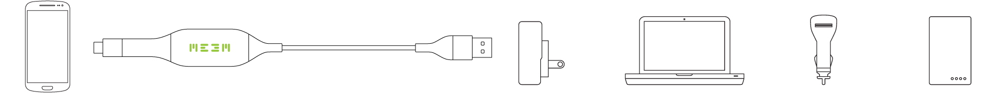

¿Qué es MEEM?
MEEM es un cargador de teléfono móvil y un dispositivo de copia de seguridad en un cable. Cada vez que cargas el teléfono, haces una copia de seguridad de los datos en el propio cable MEEM.

Tus recuerdos son asunto tuyo; protegerlos es asunto nuestro. Nunca te pediremos datos personales o derechos para acceder a tus datos. Tu información privada permanece siempre bajo tu control físico.
Sin abusos de piratas informáticos. Sin explotación corporativa. Sin intrusión del gobierno.